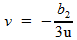
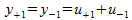

Solution to the Cubic Equation
A general cubic equation:
In the form of Vieta's formulas:
Tschirnhaus Transformation (removing the quadratic term):
Equate coefficients:
This leaves us with the depressed cubic - an equation without a quadratic term. That is the equation we will solve, for it yields a much simpler solution.
Cardano's substitution:

then we have:
so we choose u and v such that the middle right term vanishes...
This gives (note that this means u cannot be 0)
So this is our substitution ("Vieta's Substitution"):
This gives:
Multiplying by u3:
Letting t = u3 we have a quadratic equation:
Which we solve with the quadratic formula:
Note that since u can not be 0, t cannot be 0 either.
Now we unravel our substitutions:
Note that we started with a cubic equation, which has three roots. We arrived at a sextic, which must have six roots. So we must determine which three of these six roots give the three roots of the original equation.
We receive three sextic roots when the plus/minus is a plus, and three more when it is a minus.
t has 2 values.
u has 6 values (3 for each value of t).
Let us name these six values as follows:
These will give us six values for y as well:
We must show that only three of these six values for y are unique.
The cubic discriminant is:
Note that:
So we have:
Therefore,

And similarly for all the y's,

Therefore we can choose to only take the plus from the plus/minus without losing any roots:
Example 1.
If b2=0 (i.e. we are finding the cube root of a constant (b3)), the solution reduces to: . The zero solution is excluded by the above definition of u, so are left with the correct solution, . The three roots when the plus/minus is a plus are true, and the three when the plus/minus is a minus are false.
Example 2.
...one solution is 2, the other two roots are imaginary
(b2 = -1, b3=6)
By our formula, we have:
...
The cubic roots of unity are the solutions to:
(b2=0, b3=1)
or
Example 3.
(b2 = -3, b3 = 2)
roots should be 2, -1, -1
(the three roots of unity)
The cubic roots of real number, A:
Let the real cubic root of A be r.
Then the three cubic roots of 10 are:
Because:
,
 ,
,